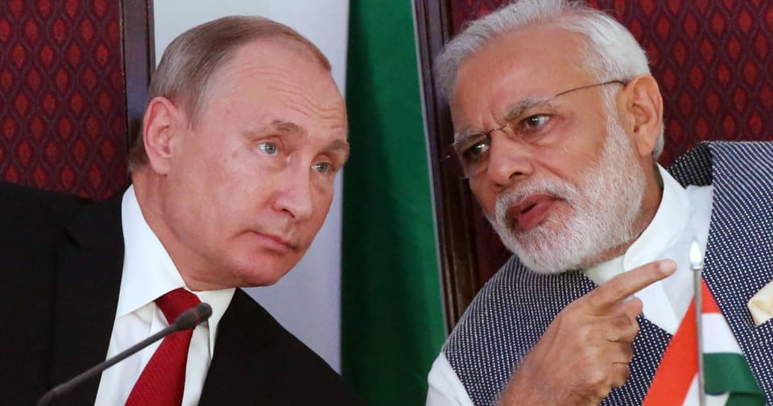

世界苦茶08月03日新闻 | 30条 | 中国发布女司机逼迫让路事件通报

中国发布女司机逼迫让路事件通报 | 中国可以远程从苹果电脑获取文件 | 巴拿马称回收港口经营权施压 | 比亚迪产销罕见下滑 | 特朗普经济政策支持率下跌
每日三條新聞解析
苦茶数据
美元兑人民币：7.19（昨日7.21，前日7.19）
美元兑日元：148.10（昨日150.64，前日148.78）
上证指数：休市（昨日3559，前日3566）
标普500指数：休市（昨日6238，前日6339）
比特币：113600（昨日115499，前日118304）
布伦特原油：69.67（昨日72.63，前日73.24）
中国新闻
• 防城港8月3日通报女司机亮证逼迫让路事件，称无开盒两人为亲戚： 关于女司机亮的执法证，通报表示女司机本人为民企员工，但其丈夫为消防员，女司机亮的是其丈夫证件。消防队认为其丈夫未妥善保管证件行为涉嫌违反工作纪律，将立案调查。关于李某某个人信息被泄露，通报表示，说出李某某个人信息的为其五服内表亲，告知李某某家庭地址是为了引导李某某靠边让行。关于李某某报警但未出警，通报表示李某某报警称如果侯某某属于公务人员，请纪委监委立案调查；如果属于冒充公职人员损害形象，请公安机关处置。值班民警让李某某自行协商或向相关部门反映，李某某表示认可。调查组分析认为，民警接报警符合警务工作规范。关于派出所民警要求李某某删除视频并进行道歉，通报表示李某某将视频发布至抖音平台后，女司机在其丈夫二级消防士的陪同下报警，称接到多省12123平台发送的违停挪车信息，怀疑信息被泄露。接警后，民警连夜随女司机一家至李某某家中，发现李某某不在家后打电话“转述”“删除视频、进行道歉”的诉求。调查组认为当时民警表述不够规范，已严肃批评教育。关于防城港市公安局工作人员挂掉记者电话，调查组表示接电话的是辅警，已严肃批评教育。 （翻评：侮辱智商的公告。）
• 港中大涉“台独”研究员被解聘 ：香港中文大学亚太研究所此前关于香港特首李家超的民调较低，香港《大公报》报道称，该研究所的骨干实为“反华推手”、“台独分子”，目前已被解聘。综合香港《大公报》、台湾《自由时报》报道，今年5月香港中文大学亚太研究所的一份民调显示，李家超评分仅46.1分，较去年5月49.9分有所下跌。民调称，仅19.4%受访市民对特区政府表现表示满意，不满意高达38.2%；相比其他机构6月所做民调，近七成港人对李家超的表现表示满意，亚太研究所民调呈现偏低。
• 金正恩命建中朝边境货运站 ：朝中社星期六报道，朝鲜领导人金正恩已下令在中朝边境附近建造一个货运站，以支持朝鲜西北部的一个大型温室农场项目。报道称，金正恩星期五到平安北道新义州市和义州郡岛屿地区永久堤坝建设工地视察。他在参观当地堤坝和农田建设时提出创建一个“综合运输中心”，并在综合运输中心周围建一个蔬菜仓库和加工设施。鸭绿江沿岸地区易受暴雨洪涝灾害。去年7月，流经中朝边境的鸭绿江泛滥，引发严重洪灾，造成大面积影响。报道称受影响的居民楼已迅速重建，金正恩称，曾被视为不可避免的洪灾已“成过去式”。
• 河北暴雨致文旅项目多人失联 ：中国河北省官方通报，受强降雨影响，当地的文旅项目有三人遇难、四人失联，搜救和核查工作仍在进行中。新华社客户端星期六引述河北省兴隆县防汛抗旱指挥部消息报道，兴隆县星期一发生强降雨，有人员在当地的文旅项目北京山谷失联。经初步核实，截至目前，北京山谷项目有三人遇难、四人失联，搜救及核查工作仍在持续进行中。
• 男子八一节发言不当被处罚 ：中国一名男子在“八一”建军节发布涉军人不当言论，被警方传唤并处以行政处罚。据襄阳网警官方微博消息，湖北襄阳网警星期五（8月1日）发现一王姓网民在“八一建军节 致敬所有军人 庆祝中国人民解放军建军98周年”的帖文评论中发布涉军人不当言论，亵渎军人尊严，引发网民强烈愤慨。樊城警方当天将54岁的涉事王姓男网民传唤至公安机关，王姓网民对在网上发布涉军人不当言论违法事实供认不讳，被樊城警方处以行政处罚。
• 刘鹤现身会见美企代表团 ：过去一年鲜少露面的中国前副总理刘鹤，在北京与美企代表团会面。美中贸易全国委员会星期五在官方微信公众号通报，美中贸委会董事会代表团星期三在北京完成了两天访华活动。代表团这次访华意在促进两国商业交流、增强工商界信心，并推动在华美资企业营造更稳定、公平、可预期的营商环境。代表团这次还支持了两国正在进行的围绕双边及全球议题的持续谈判与对话。根据通报，在中美两国持续就关税和贸易政策问题进行谈判之际，美中贸委会董事会代表团在北京与中共中央外事工作委员会办公室主任王毅、中国商务部部长王文涛、中国工业和信息化部部长李乐成、中国国家发展和改革委员会副主任周海兵，中国人民银行副行长宣昌能会面。代表团还与中共北京市委书记尹力、中国国际贸易促进委员会会长任鸿斌进行会晤，并获得美国驻华大使庞德伟的接待。
亚太印太新闻
• 朱立伦称罢免是守民主之战 ：台湾在野的国民党主席朱立伦在社交平台发文称，台湾民众在8月23日面临的不只是一次罢免投票，而是一场守护民主、守护台湾经济的战役。朱立伦星期六在脸书写道，民进党打这场大罢免，只有一个目标，就是罢掉在野党七席，立法院席次过半，实现全面独裁。他指出，只要民进党成功，就有可能要把普发现金、放假、军人加薪、退休警消海巡加薪、经济建设通通都收回。这一年来国民党在立法院推动的福台利民法案都将变成空谈，因为他们眼里只剩下权力算盘。
• 日本高温干旱威胁农作物 ：日本今夏创纪录的高温和干旱引发对农作物影响的担忧，预计高温和降雨不足的状况将持续到8月。日本气象厅数据显示，今年6月和7月创下了新的平均气温纪录。由于降雨不足，主要产稻区如东北和北陆地区的作物生长已受到影响。许多地区7月的降雨量不到平均水平的一半，东北和北陆地区日本海一侧的降雨量分别仅为平均的13%和8%。
• 亚细安观察组视察柬冲突地 ：柬埔寨国防部星期六说，亚细安临时观察组于星期四视察了冲突地区。新华社报道，柬埔寨国防部发言人马莉淑洁达说，亚细安观察组成员包括亚细安轮值主席国马来西亚驻柬武官、越南武官助理和菲律宾武官助理。她说，柬埔寨随时准备与马来西亚领导的观察组合作，监督停火协议执行情况。
• 英前首相将出席台印太论坛 ：台湾官方证实，英国前首相约翰逊将出席下周在台北举行的凯达格兰论坛，并发表演讲。据台湾外交部官网消息，外交部与两岸交流远景基金会将于下星期二在台北君悦酒店举办第九届凯达格兰论坛：2025印太安全对话，希望借这个平台增进与各方互动和对话，提升国际社会对印太地区安全议题的关注。今年论坛邀请英国前首相约翰逊和法国前国民议会议长戴扈杰发表专题演讲，同时邀请来自美国、日本、欧洲、印太地区等10个国家和地区的12名政要与学者专家，与台方共同讨论印太安全情势、灰带侵扰因应，以及经济、科技与产业外交对国际政治的影响等议题。
科技新闻
• SpaceX“龙”飞船对接成功 ：搭载四名宇航员的美国太空探索技术公司“龙”飞船星期六飞抵国际空间站并完成自动对接。综合新华社和法新社报道，“龙”飞船于美东时间8月1日搭乘“猎鹰9”火箭，从佛罗里达州肯尼迪航天中心发射升空。在飞行约15小时后，飞船于美东时间2日凌晨2时27分与国际空间站自动对接。
• 中方要求英伟达提交安全证明 ：美国科技巨头英伟达被中国监管机构约谈后，中国官媒发文呼吁英伟达拿出令人信服的安全证明赢得市场信任，并强调不能让“带病”晶片上岗。中国国家互联网信息办公室星期四约谈英伟达，要求英伟达就对华销售的H20算力晶片可能存在漏洞后门安全风险进行说明，并提交相关证明材料。中共中央机关报《人民日报》星期五发表题为《英伟达，让我怎么相信你》的评论称，“晶片漏洞后门安全风险一旦触发，我们随时可能遭遇一场‘噩梦’”。
• 特斯拉因自动驾驶的致命事故被判赔偿 ：美国一个联邦陪审团裁定，特斯拉应对2019年在佛罗里达发生的一起事故承担三分之一的责任。当时，一辆特斯拉 Model S 以每小时50英里的速度穿过十字路口，撞上了一辆停在路边的汽车，导致一名行人死亡，另一名行人致残。原告律师辩称，事故的发生是由于司机自满情绪，而这源于特斯拉夸大其辅助系统的能力。特斯拉称，这名司机因手机掉落而分心，并且脚踩在加速踏板上，行为十分不负责任。其指南明确规定，在其系统启用时，驾驶员必须始终保持警觉并掌控车辆。判决指出，特斯拉需支付两亿美元的惩罚性赔偿金，并向死者家属赔偿1950万美元，向其受伤的男友赔偿2310万美元。
• 中国知名网安公司新专利显示其能够无接触地从苹果设备中恢复文件： 研究人员发现，中国知名网安公司上海势炎信息科技有限公司提交了10多项强大的攻击性网络安全技术专利，据称该公司参与了北京的丝绸台风行动。该公司拥有多种攻击性工具的专利，这些工具暗示其能够监控个人住宅，例如‘智能家电分析平台’、‘远程家庭计算机网络智能控制软件’和‘智能家电证据收集软件’，这些软件可以支持对海外个人的监视。”像中央情报局这样的情报机构也使用类似的工具。该公司还申请了用于“远程”证据收集、针对路由器和 Apple 设备等用途的软件专利。这项针对 Apple 电脑的专利之所以引起研究人员的关注，是因为它允许攻击者远程从设备中恢复文件，这些技术“提供了强大的、通常此前从未被报道过的攻击能力，从获取加密的终端数据、移动取证到收集网络设备流量。”
财经新闻
• 美联储理事库格勒将提前离职 ：美国联邦储备局星期五宣布，理事库格勒将提前在8月8日离职。在美国总统特朗普正施压美联储降低利率之际，这为他创造一个填补美联储重要职位空缺的机会。2023年获前总统拜登提名出任理事的库格勒，任期原本要到2026年1月才结束，她已提交辞职信但未说明离职原因。特朗普对美联储即将出现的空缺表示非常高兴，这将让他比预期更早可指派新理事，塑造美联储领导阶层。他再次在社媒指出，美联储主席鲍威尔应该和库格勒一样辞职，并称如果鲍威尔继续支持维持利率不变，美联储董事会就应该接过控制权。
• 巴拿马或收回港口经营权 ：巴拿马总统穆利诺说，如果当地法庭裁定香港长和集团港口经营权续约合同无效，政府将取回巴拿马两个关键港口的经营权，转为公私合营。据路透社报道，香港长和集团持有巴拿马港务公司的90%股权。自1997年起，巴拿马港务公司获得位于巴拿马运河两端关键港口巴尔博亚港和克里斯托瓦尔港的25年特许经营权，并于2021年完成续约。巴拿马国家审计署本周已向最高法院提出两起诉讼，旨在以合同续签未依照法律规定的程序执行为由，宣告续约合同无效。
• 特朗普欢迎巴西总统讨论关税 ：美国总统特朗普说，巴西总统卢拉可以随时打电话给他，跟他讨论关税问题以及两国之间的其他摩擦。路透社报道，特朗普星期五在白宫对记者说：“他可以随时跟我谈。”特朗普还说非常喜欢巴西人，但“管理巴西的人做错事”。
• 比亚迪7月产销现罕见下滑 ：中国电动汽车巨企比亚迪7月全球产量同比下降，结束了16个月的增长势头。路透社星期五引述香港交易所月度报告报道，比亚迪7月全球电动汽车和插电式混合动力汽车产量同比下降0.9%，至31万7892辆，为17个月来首次出现下滑。比亚迪7月全球销量仅微升0.6%，至34万4296辆，与6月的12%增幅相去甚远。比亚迪7月全球电动汽车销量和产量同比依旧增长，但插电式混合动力汽车的销量同比下跌22.6%，产量则下滑24.6%。
俄乌战争
• 印度继续进口俄罗斯石油，这与特朗普声称的暂停进口相悖： 尽管美国前总统唐纳德·特朗普最近暗示印度已停止购买俄罗斯石油，但新德里政府消息人士澄清，进口仍在继续，这是受市场动态和战略考虑的驱动。据报道，针对特朗普“印度将不再从俄罗斯购买石油”的声明，官员们告诉印度国家新闻社，炼油厂仍在继续采购俄罗斯原油。他们表示，这些决定是基于价格竞争力、品级要求、供应物流和库存水平，所有这些都在国际规范框架内。此前，行业报告显示，一些国有炼油厂已暂停采购俄罗斯原油，原因是折扣缩小以及对美国潜在关税的担忧影响了发货的可行性。路透社援引高管的话说，印度石油公司运营着该国20家炼油厂中的10家，最近没有订购俄罗斯原油。据报道，包括印度斯坦石油公司、巴拉特石油公司和芒格洛尔炼油及石化公司在内的其他国有炼油企业也已放缓了原油进口量。
• 扎波罗热核电站爆炸声引担忧 ：国际原子能机构称，驻乌克兰扎波罗热核电站的工作人员星期六听到附近区域传出爆炸声，并目睹浓烟升起。路透社报道，IAEA在声明中指出，核电站的一处辅助设施当天遭到袭击。该设施距离核电站围栏约1200米。IAEA团队表示，直至星期六下午，仍可清晰看到该方向持续冒出的烟雾。这座核电站目前处于战区前沿，相关局势持续引发国际社会对核安全的高度关注。
• 俄袭基辅，乌军反击俄境目标 ：乌克兰首都基辅的军事管理局通报，俄罗斯于星期天凌晨对基辅发动导弹袭击，相关消息通过官方Telegram频道发布。路透社记者在基辅现场听到午夜过后传来剧烈爆炸声，强烈震动波及全城。另据法新社报道，乌克兰国家安全局星期六指出，乌军在俄罗斯境内实施无人机打击，目标包括军事设施和天然气管道。俄方称袭击造成三人死亡、两人受伤。
• 俄混合战收敛或因忌惮美方 ：彭博社引述美国与欧洲官员报道，俄罗斯政府背后支持在各国进行的各种恶意破坏行动今年以来有减少的迹象，显示俄罗斯安全机构在发动混合型战争方面有所收敛，一个原因可能是俄罗斯总统普京避免冒犯今年初再次上台的美国总统特朗普。知情官员称，由俄罗斯特工雇用代理人，专门针对各国民间基础设施及个人发动攻击的事件今年来减少了，一个可能原因是莫斯科收紧了将攻击任务发派给不可信赖的当地犯罪分子，当中一些犯罪分子往往不受控制，或导致事件发展失控。也有西方官员相信，攻击事件减少可能是因为普京要避免进一步冒犯上台后积极寻求解决俄乌纷争的特朗普。
• 乌称俄助朝鲜开发无人机 ：乌克兰指俄罗斯正在向朝鲜提供“见证者”攻击无人机技术，并协助朝鲜生产无人机。路透社报道，乌克兰总统泽连斯基的幕僚长叶尔马克星期五在社媒平台说：“我们看到俄罗斯正在向平壤转移‘见证者-136’型自杀式无人机技术，协助他们建立生产线，并与他们进行导弹开发交流。”见证者-136无人机为伊朗研制，也称为自杀式无人巡飞弹。
• 美欧拟设机制为乌提供武器 ：在美国总统特朗普对俄罗斯持续袭击乌克兰表示不满之际，跨大西洋联盟在乌克兰问题上重启合作。有消息指，美国和北约正在制定为乌克兰供应武器的新方案，用北约国家的资金来支付购买或转让美国武器。路透社报道，三名知情人士透露，北约国家、乌克兰和美国正在制定一个新机制，根据“乌克兰优先需求清单”向乌克兰提供美国的武器。乌克兰将分批次优先列出它需要的武器，每批次价值约5亿美元，北约国家则在北约秘书长吕特的协调下进行内部协商，以决定由谁捐赠武器或支付采购武器的费用。
• 马来西亚元首将访俄六天 ：马来西亚国家王宫星期六宣布，应俄罗斯总统普京邀请，马来西亚国家元首依布拉欣8月5日至10日到俄罗斯进行国事访问。彭博社报道，马来西亚国家王宫说：“此次访问也体现了马来西亚王室在推动国家外交方面的重要作用。”这次访问将加强马俄关系，并增进双方在贸易、教育、技术等领域的合作。这将是马来西亚国家元首第一次对俄罗斯进行国事访问。苏丹依布拉欣将出席普京为他设的国宴，并参观一家汽车技术开发公司和托奇卡·基佩尼亚技术与创新中心。
国际新闻
• 以军警告加沙战事或延续 ：以色列国防军总参谋长扎米尔警告，如果谈判不能确保人质迅速获得释放，加沙的战斗就不会停止。据以色列军方发布的声明，扎米尔星期五对在加沙作战的以军士兵说：“我估计，未来几天我们就能知道能否就释放人质达成协议。如果不能，战斗将继续，不会停歇。”以色列军方发布的视频画面显示，扎米尔是在加沙一个军事指挥中心对以军官兵发表讲话。
• 特朗普经济支持率持续下滑 ：美国多项民调显示，越来越多选民对总统特朗普处理美国经济的方式感到不满，但这种不满并未转化为对民主党的支持。盖洛普7月的民调显示，只有37%的选民认可特朗普的经济政策，较2025年2月的42%有所下降。尽管共和党选民依然坚定支持特朗普，但这一下降主要来自独立选民，认为他在经济方面做得不错的独立选民如今不到三分之一。《华尔街日报》和哥伦比亚广播公司等新闻机构的民调也出现类似结果。
• 加美合推遣返顽固移民机制 ：路透社看到的一份政府文件显示，加拿大和美国正在合作解决不愿接受被驱逐移民国家的问题，因为两国都在加大努力将移民送回他们的国家。加拿大移民部国际事务总监2月28日在发给一未知收件人且隐去部分信息的的电邮中写道：“加拿大将继续与美国合作应对在遣返问题上持不合作态度的国家，使加拿大和美国更顺利地将外国公民送回国。”这封邮件发出时，特鲁多即将卸下加拿大总理职务，他的继任者卡尼于今年3月上任。
• 白宫要求哈佛接受监督换和解 ：彭博社引述知情者说，白宫在与哈佛大学的和解谈判中，把5亿美元视为达成和解的底线。如果哈佛不接受政府的监督条款，和解成本可能更高。特朗普政府的主要要求之一是要哈佛允许一名共同批准的监督员来监督合规情况。知情者说，哈佛还必须承诺落实其他监督改革，以换取终结多项民权调查，以及解冻26亿美元的联邦研究资金。哥伦比亚大学最近与政府达成2亿多美元的和解协议，预计这将成为其他学府的协议模板，政府坚持哈佛必须接受与哥大几乎一样的条款。
• 联合国报告发现联合国报告阅读量不足。一份旨在提高效率和削减成本的联合国报告显示，联合国报告阅读量不足： 联合国秘书长安东尼奥·古特雷斯周五向各国介绍了联合国80周年改革报告。该报告重点关注联合国工作人员如何执行大会或安全理事会等机构赋予的数千项任务。他表示，去年联合国系统支持了240个机构的2.7万次会议，联合国秘书处编写了1100份报告，比1990年增长了20%。 （翻评：联合国确实需要改革了。）